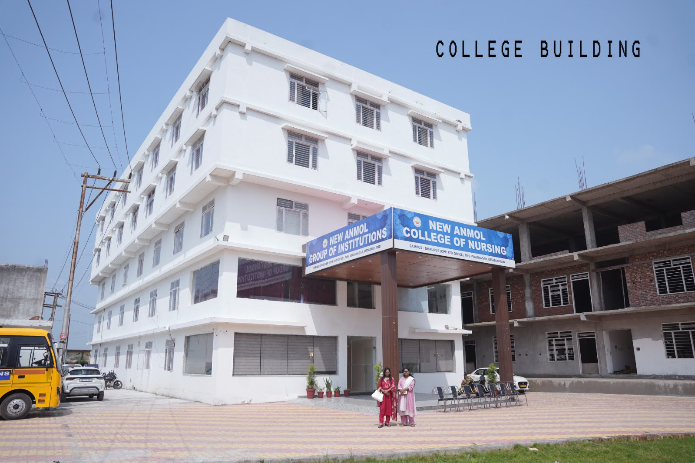
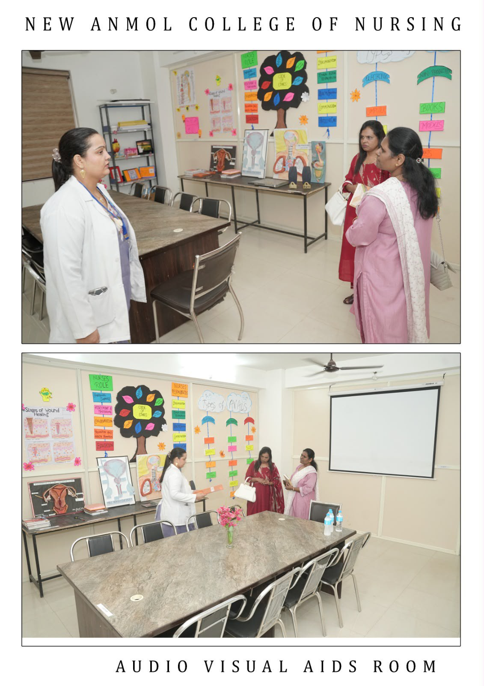
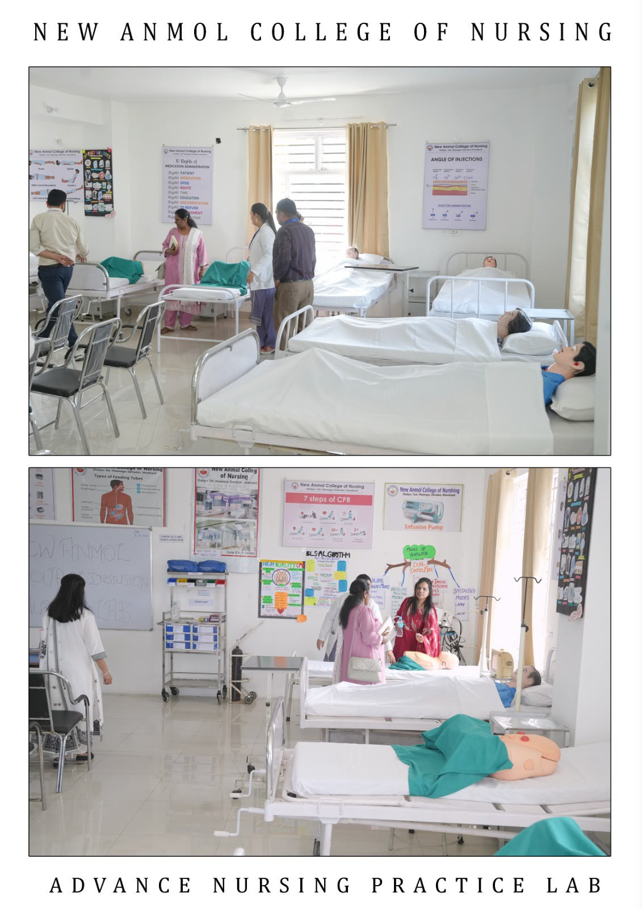
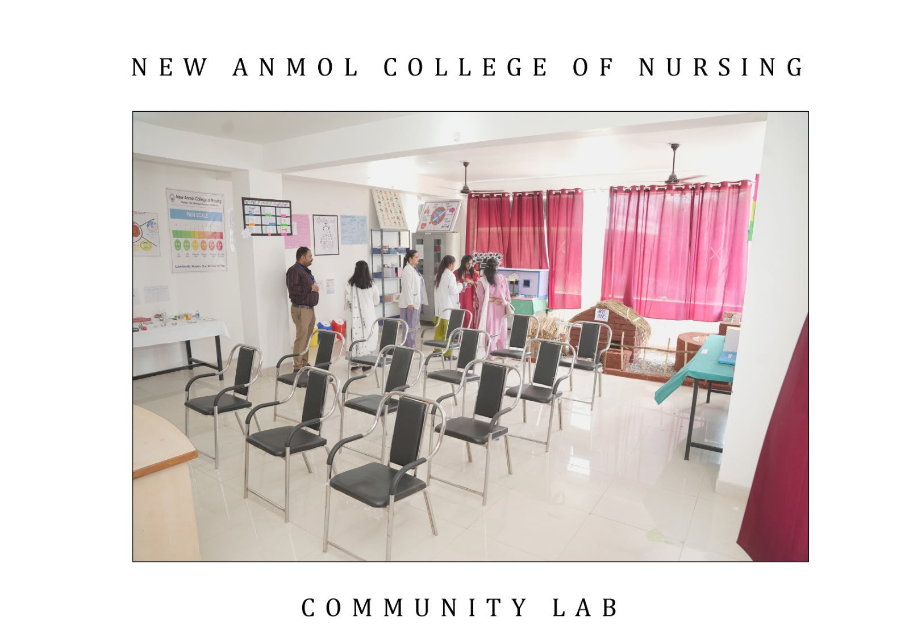
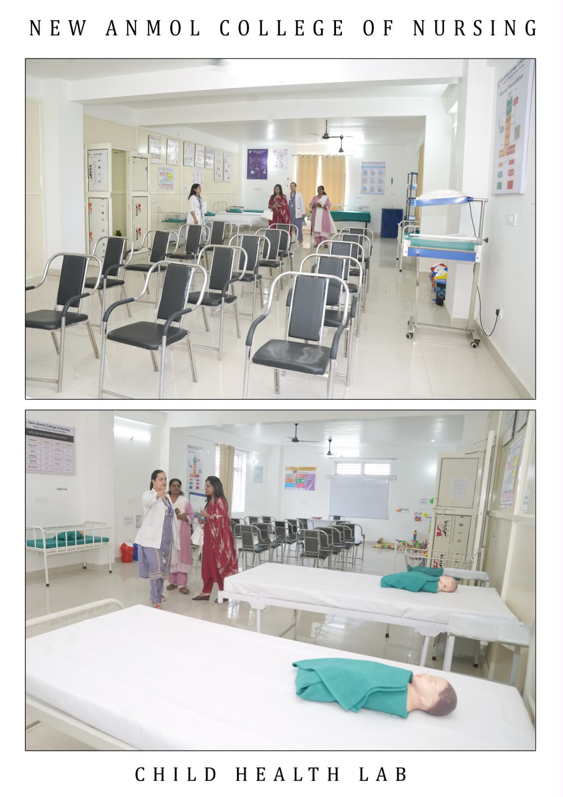
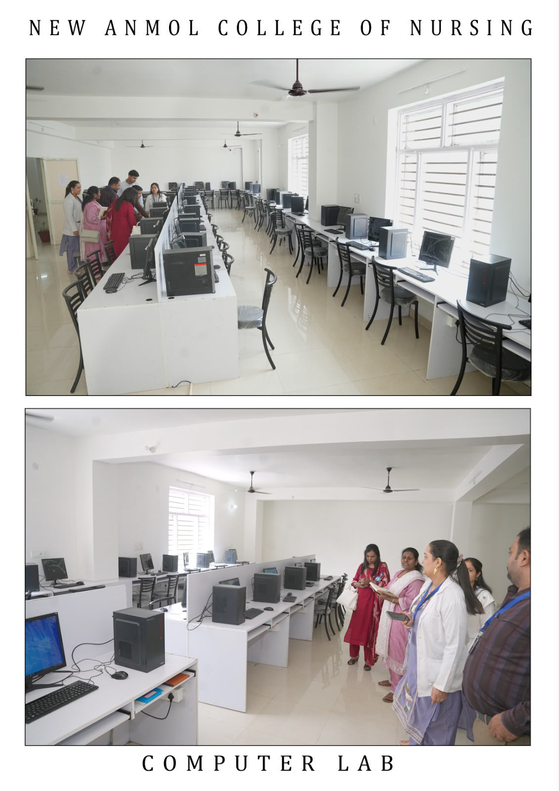

Institutional media
Documenting the learning environment.
A curated record of the campus, practical spaces, student cohorts, faculty and institutional film.
Shared media library
One visual record, reused with care.
The media catalog draws from the same supplied assets used across Campus, Learning and Student Life. It keeps the institution's photography in one place rather than creating duplicate galleries.
Campus film
The institution in motion.
The supplied campus film moves through regional context, campus interiors, the computer lab, teaching models, nursing practice spaces, a seminar setting and the main building.
Read the campus storySelected photographs
Spaces, people and practice.








Academic moments
Context for the photographs.
Student cohorts, faculty groups and practical spaces are presented as documented institutional media.